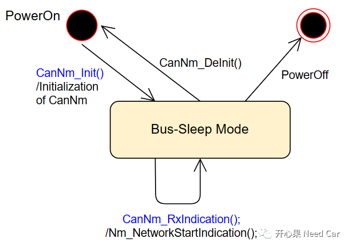
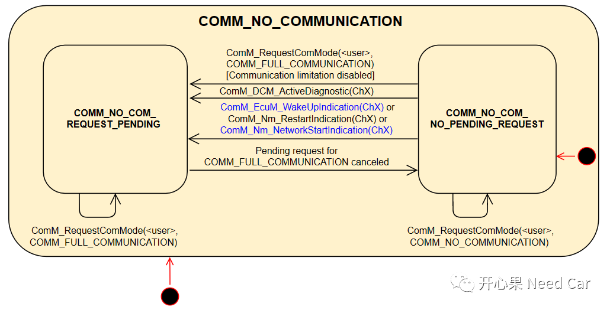

Autosar网络管理看似简单，其实，想要在工程Bug中，快速地定位问题点，还需要更深入地理解Autosar网络管理。本文，针对群内小伙伴的问题："ECU被唤醒时，ComM初始化为NO_COMMUNATION，那在Bus sleep mode下，要求只收不发，怎么去收NM报文呢？"，本文，针对这个问题聊一聊。以CanNM为例。我们聚焦一下CanNM初始化，uC上电以后（PowerOn），调用CanNM的CanNm_Init()接口完成初始化，之后，CanNM对应的Channel进入BSM（Bus-Sleep Mode）。在BSM模式下，能否接收网络管理报文呢？答：显然可以，如下图：
上图可以看出，在BSM模式下，接口CanNm_RxIndication()可以被反复调用，也就意味着：NM Msg可以被CanNM接收，且将网络状态通过Nm_NetworkStartIndication()接口告知NM，NM再通过接口ComM_Nm_NetworkStartIndication()进一步告知到ComM，是否开启对应Channel的网络，就需要ComM"点头"了。BSM模式下，收到NM Msg以后，CanNM、NM、ComM接口通知关系如下所示：
CanNM能接收NM Msg，首先要满足一个条件：“硬件Controller和Transceiver进入正常的工作模式。”而这两个硬件之所以能进入正常的工作模式，是因为程序初始化的时候，将两个硬件模式设置到了正常的工作模式。更具体说：ECU供电时，通过EcuM的Callout（EcuM_StartWakeupSources()）先将两者切换到正常的工作模式。只有这样，NM Msg才能被有效的接收。但是，此时，节点未必能发送报文，如果节点想发送报文，需要EcuM识别到有效的唤醒源（避免误唤醒），如果EcuM识别到了有效的唤醒源，则进一步的告知ComM，ComM根据EcuM上报的信息，决定是否"点头"，也就是通信的开启。首先，再明确一下：“ECU唤醒≠网络唤醒，ECU唤醒是网络唤醒的前提”。当ECU被唤醒以后，意味着uC开始工作，所有的程序代码可以被OS正常的调度。也意味着：所有软/硬模块已经完成了初始化动作。自然，ComM完成初始化以后，进入COMM_NO_COMMUNICATION模式。ComM在此模式下并不会允许对应的Channel通信。ComM如何才能允许通信呢？这里我们关注两个条件：1、EcuM请求ComM，即：调用接口ComM_EcuM_WakeUpIndication(ChX)。这个接口的调用，也可能因为节点被动唤醒（eg：收到同网段其他节点的网络管理报文）；2、NM请求ComM，即：收到NM Msg，NM调用接口ComM_Nm_NetworkStartIndication(ChX)。这个接口的调用，意味着NM的网络状态在BSM。
ComM收到通信请求以后，这里关注NM Msg触发的请求。会去检查对应EcuM是否处于RUN模式，以及对应Channel是否CommunicationAllowed=TRUE。如果满足上述两个条件，则ComM将对应的Channel切换到COMM_FULL_COMMUNICATION，之后，对应Channel的通信打开，网络唤醒（进入NM（Network Mode））。综上述：NM Msg能否接收，与Controller和Transceiver的状态相关，只有Controller和Transceiver处于正常的工作模式，才能有效的收/发报文；NM Msg有效的接收，NM可以请求ComM开启网络，EcuM也可以检查Controller或者Transceiver的状态判断是否是因为BUS（收到NM Msg）导致的唤醒，进而请求ComM通信。
所以，解答文章开始的问题：BSM模式下，只要Transceiver和Controller进入正常的工作模式，即可以接收报文，自然，也包括网络管理报文，不受ComM模式约束。而NM收到NM Msg以后，会主动请求ComM打开通信，进而切换ComM的模式。
点击下方关注，一起聊聊Autosar/嵌入式，如果需要，联系作者进群，给你更专业的解答